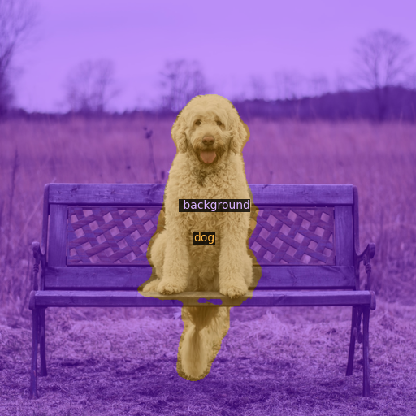
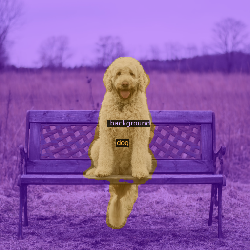

Abstract
Existing works on open-vocabulary semantic segmentation have utilized large-scale vision-language models, such as CLIP, to leverage their exceptional open-vocabulary recognition capabilities. However, the problem of transferring these capabilities learned from image-level supervision to the pixel-level task of segmentation and addressing arbitrary unseen categories at inference makes this task challenging. To address these issues, we aim to attentively relate objects within an image to given categories by leveraging relational information among class categories and visual semantics through aggregation, while also adapting the CLIP representations to the pixel-level task. However, we observe that direct optimization of the CLIP embeddings can harm its open-vocabulary capabilities. In this regard, we propose an alternative approach to optimize the image-text similarity map, i.e. the cost map, using a novel cost aggregation-based method. Our framework, namely CAT-Seg, achieves state-of-the-art performance across all benchmarks. We provide extensive ablation studies to validate our choices.
HuggingFace Demo
Qualitative Results
Quantitative Results
Motivation of Cost Aggregation
Main Architecture
In-the-Wild Segmentation Results
Application: Image Editing with Stable Diffusion
 

Citation
Acknowledgements
The website template was borrowed from Michaël Gharbi.